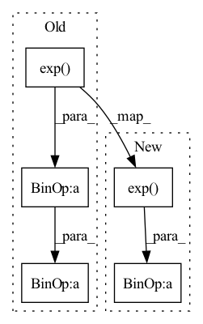

Pattern ID :304
Before Change
out = self.layer1(x)
out = self.layer2(out)
out = out.reshape(out.size(0), -1)
out1 = torch.exp( -1.0 * w)
out2 = fac1 * torch.cat([out1, 1.0 - out1], dim=1)
out0 = torch.cat([out2, out], dim=1)
out0 = self.Lrelu(self.fc1(out0))
out0 = self.bn1(out0)
out0 = torch.cat([a0 * out2, out0], dim=1)
out0 = self.Lrelu(self.fc2(out0))
out0 = self.bn2(out0)
out0 = torch.cat([a0 * out2, out0], dim=1)
out0 = self.Lrelu(self.fc3(out0))
//out0 = self.Lrelu(self.fc4(out0))
//out0 = torch.cat([a0*out2, out0],dim=1)After Change
out = self.layer2(out)
out = out.reshape(out.size(0), -1)
out = self.bn1(out)
out2 = 5.0* torch.exp( -1.0*w)
out0 = torch.cat([out2, out],dim=1)
out0 = self.Lrelu(self.fc1(out0))
out0 = self.bn2(out0)
out0 = torch.cat([out2, out0],dim=1)In pattern: SUPERPATTERN
Frequency: 3
Non-data size: 5
Instances Fragment ID: 1284243
Project Name: sungbinlim/neuboots
Commit Name: 68401fc91299dbb0105a4c102b26384e15b125dc
Time: 2020-04-22
Author: minsuk000@gmail.com
File Name: models/cnn.py
M Class Name: ConvNet
N Class Name: ConvNet
M Method Name: forward(4)
N Method Name: forward(5)
M Parent Class: nn.Module
N Parent Class: nn.Module
M File Name: models/cnn.py
N File Name: models/cnn.py
M Start Line: 37
M End Line: 56
N Start Line: 36
N End Line: 48
Before Change
// Since we can evaluate all of z in parallel, estimation will be fast.
st = self.net(x)
s, t = st.split(self.dim, dim=1)
z = x * torch.exp(s) + t
// Reverse order, so if we stack MAFs, correct things happen.
z = z.flip(dims=(1,)) if self.parity else z
log_det = torch.sum(s, dim=1)After Change
for i in range(self.dim):
st = self.net(x.clone()) // clone to avoid in-place op errors if using IAF
s, t = st.split(self.dim, dim=1)
x[:, i] = (z[:, i] - t[:, i]) * torch.exp( -s[:, i])
log_det += -s[:, i]
return x, log_det
Fragment ID: 1284264
Project Name: janosh/torch-mnf
Commit Name: 89ce9b3eb1de8e735e68602768c84ad28cbdd251
Time: 2020-08-23
Author: janosh.riebesell@gmail.com
File Name: torch_mnf/flows/maf.py
M Class Name: MAF
N Class Name: MAF
M Method Name: forward(2)
N Method Name: forward(2)
M Parent Class: nn.Module
N Parent Class: nn.Module
M File Name: torch_mnf/flows/maf.py
N File Name: torch_mnf/flows/maf.py
M Start Line: 33
M End Line: 39
N Start Line: 43
N End Line: 51
Before Change
def forward(self, x, alpha, fac1):
out = x
out2 = torch.exp( -F.interpolate(alpha[:, None], self.in_feat)) [:, 0]
out2 = out2 * fac1 + (1 - fac1)
return self.fc_out(out * out2)
class GbsConvNet(nn.Module):After Change
def forward(self, x, alpha, fac1):
out1 = x
// out2 = torch.exp(-F.interpolate(alpha[:, None], self.in_feat))[:, 0]
out2 = torch.exp( -alpha) * fac1
out = torch.cat([out1, out2], dim=1)
return self.fc_out(out)
Fragment ID: 1284255
Project Name: sungbinlim/neuboots
Commit Name: 4a51a481d957fc2b685e1c373893bbf37ac37d41
Time: 2020-09-28
Author: phelahab@gmail.com
File Name: models/gbsnet.py
M Class Name: GbsCls
N Class Name: GbsCls
M Method Name: forward(4)
N Method Name: forward(4)
M Parent Class: nn.Module
N Parent Class: nn.Module
M File Name: models/gbsnet.py
N File Name: models/gbsnet.py
M Start Line: 32
M End Line: 35
N Start Line: 32
N End Line: 36